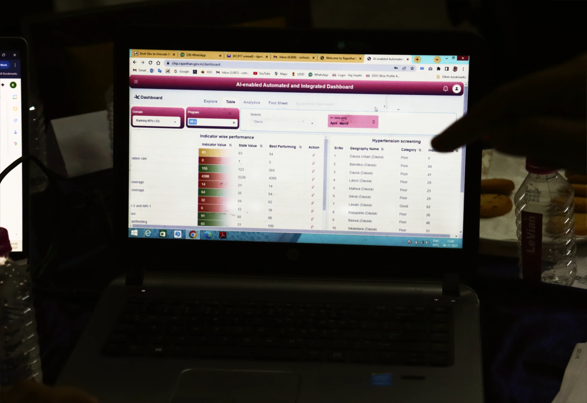
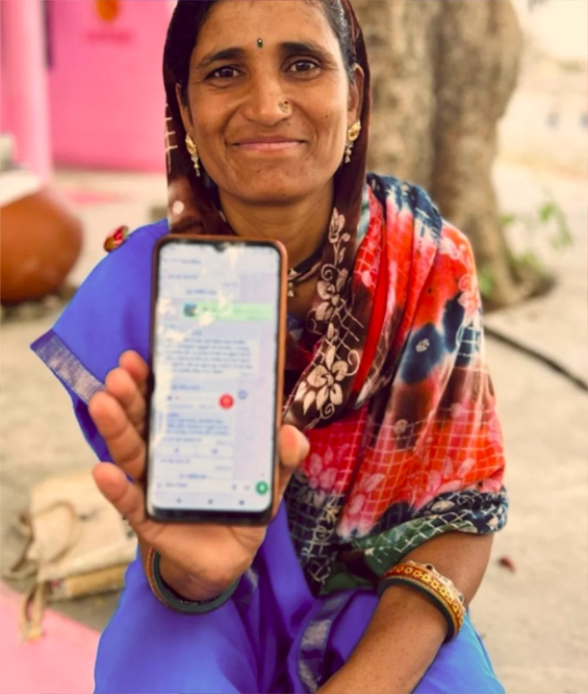

Co-developed with community health workers after 250,000 hours in the field, CHIP is a unified, offline-ready digital platform that consolidates the entire work requirement of frontline health workers across all primary health care programs and reshapes it into a single digital health interface.
CHIP reduces over 180 redundant indicators across 12 national health programs.
By 2030, we want CHIP to reach 100 million people across three states, with at least 80% coverage with 80% data quality

Every deployment of the CHIP platform begins with a digital health census — a community health worker-led, structured enumeration of every household and family member within the geography. This establishes the population denominators that make all subsequent targeting possible. Without this foundation, insights are directional at best; with it, they are actionable.
The census establishes a live list of individuals against which longitudinal health programs can follow already-registered individuals. It maps multi-dimensional vulnerability at the village level — social, economic, geographic, and health — creating the substrate for every insight and every action that follows.

Community health workers use CHIP to perform a digital health census of their village, track health longitudinally across programs, and measure health service delivery progress in a unified interface. CHIP reduces over 180 redundant indicators over 12 national health programs.
CHIP empowers health officials with AI and GIS-based dashboards providing real-time monitoring of community needs and health system performance across multiple health programs. Geospatial mapping makes it possible to see where high-risk populations are concentrated, where service delivery gaps exist, and where targeted action is most urgently needed. These insights flow to health officials at the block, district, and state level, enabling data-informed decision-making.
CHIP enables longitudinal follow-up across health areas, ensuring individuals identified as high-risk are tracked throughout their full care journey and not lost between visits, referrals, or departments. The dashboard enables health officials to directly link insights to actions by prompting users to schedule follow-ups, reallocate resources, and trigger coordinated response.

It is designed as a digital public good to be owned, adapted, and scaled by govts.
A unified interface across health workers and national health programs.
It is co-designed with community health workers and built for the last mile.
It is evidence-based and scale-tested, validated through a 3,200 patient randomized controlled trial and deployed at scale across 60,000 health workers reaching 60 million beneficiaries.
These integrations that allow linkage between the identification of a malnourished child in the nutrition department to their treatment completion in the health department; that allow TB surveillance to draw on a census of 40 million people to target the most vulnerable; and that allow an immunization campaign to surface the zero-dose infant the routine system had missed.
CHIP also powers India's first village-level maps of climate-health vulnerability and multi-dimensional poverty for resource allocation decisions across departments. Beyond government systems, eight implementing and research partners have been onboarded onto CHIP.
As of 2025, the platform is connected to 11 state and central govt. platform linkages, enabling data to flow across formerly siloed vertical programs.
Featured Vertical Health Registries Integrated


Using the DIA framework, we believe we can compound learnings for public health impact. Each additional year of census data improves the accuracy of vulnerability targeting. Each additional integration unlocks a new cross-program view. Each partner onboarded adds evidence towards effective and coordinated public health interventions. Each HAC cycle contributes to a playbook that makes the next deployment faster and better-calibrated.
ABOUT OUR OPERATING MODEL